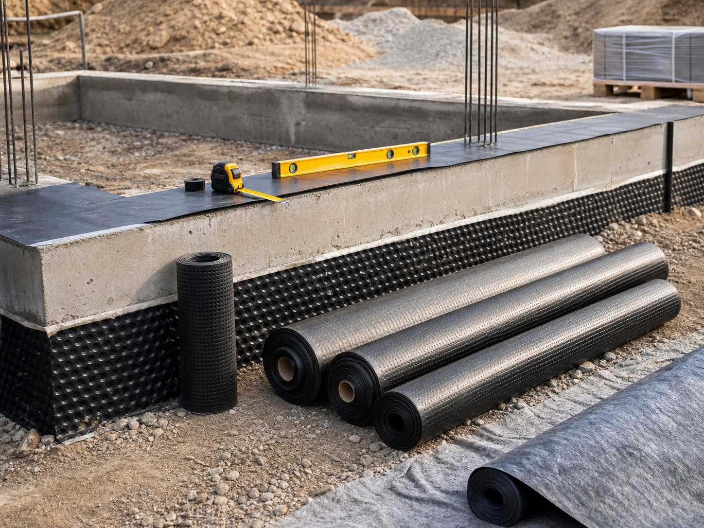
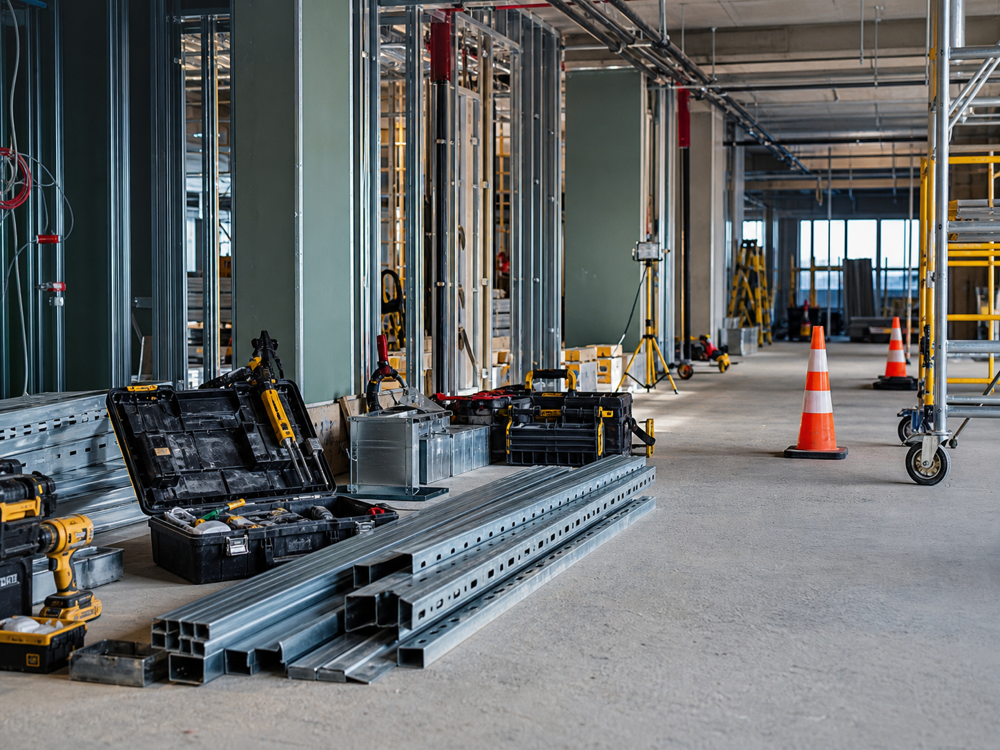
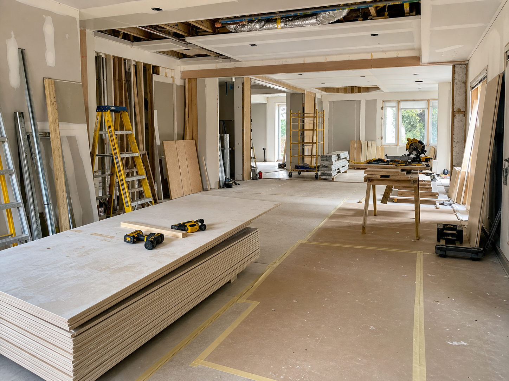

Specialised Building Activities
Support around activities that sit outside routine material supply, including foundations, damp-proof course requirements and drying out of buildings after water exposure or site conditions.
Specialist services
Some projects need more than a product list. MIDX TRADERS LTD can discuss specialist construction-related requirements where material knowledge, timing and practical coordination need to sit together.

Support around activities that sit outside routine material supply, including foundations, damp-proof course requirements and drying out of buildings after water exposure or site conditions.
Coordination awareness for specialist structural work, including steel erection, self-supporting aerial masts and related activity where skilled labour and proper equipment matter.

Installation-led work can involve unusual fixings, specialist tools or staged access. The company can discuss these requirements as part of a wider project need.

Practical building services and specialised construction tasks that support contractors, manufacturers, retailers and property improvement teams.
Good supply support means understanding what materials are being used for, what pressure exists on site and when a specialist requirement changes the conversation. That is why these services are presented alongside the product range, not separate from it.
Registered address
47 Hiliary Gardens, Stanmore, England, HA7 2NH.